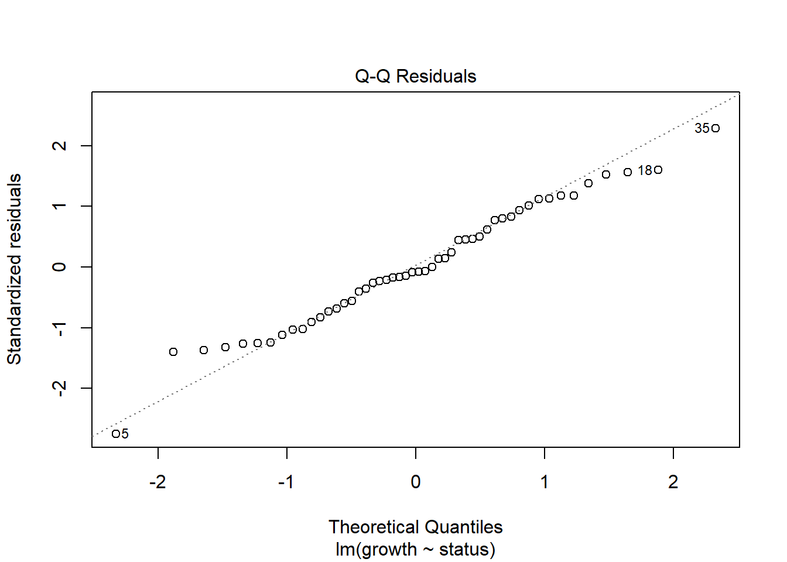
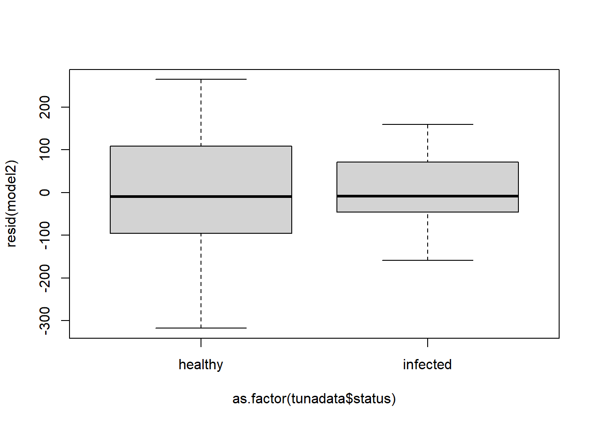

Call:
lm(formula = growth ~ status, data = tunadata)
Residuals:
Min 1Q Median 3Q Max
-317.76 -83.56 -9.86 91.37 264.44
Coefficients:
Estimate Std. Error t value Pr(>|t|)
(Intercept) 390.16 23.55 16.569 <2e-16 ***
statusinfected -51.76 33.30 -1.554 0.127
---
Signif. codes: 0 '***' 0.001 '**' 0.01 '*' 0.05 '.' 0.1 ' ' 1
Residual standard error: 117.7 on 48 degrees of freedom
Multiple R-squared: 0.04791, Adjusted R-squared: 0.02808
F-statistic: 2.416 on 1 and 48 DF, p-value: 0.12673 Linear Models
So far we have run a categorical linear model with no covariates (also known as a one-sample t-test):
\[ \begin{split}y_i & \sim \beta_0 + \epsilon_i \\ \text{where } \epsilon & \sim normal(0,\sigma) \end{split} \]
That is the first model you ran in the last assignment (assignment 2).
That equation reads as the ith observation of the response variable (y) is given by the intercept \(\beta_0\) plus some “observation” error that is normally distributed.
You also ran a couple of 2 sample test (AKA 2 sample t-test) which have the following structure:
\[ \begin{split} y_i & \sim \beta_0 + \beta_1x_i + \epsilon_i \\ \text{where } \epsilon & \sim normal(0,\sigma) \end{split} \]
That reads as the ith observation of the response variable (y) is given by the intercept \(\beta_0\) plus a coefficient \((\beta_1)\) multiplied by an explanatory variable, plus some “observation” error that is normally distributed.
Let’s actually look at the tuna example that you should have run.
\[ \begin{split} Growth_i & \sim \beta_0 + \beta_1(\text{status infected}) + \epsilon_i \\ \text{where } \epsilon & \sim normal(0,\sigma) \end{split} \]
Where status (infected) is treated as:
| Status | Value of x |
|---|---|
| Healthy | 0 |
| Infected | 1 |
So, for healthy individuals, we can obtain the predicted value as:
\[ \begin{split} y_i & \sim \beta_0 + \epsilon_i \\ \text{where } \epsilon & \sim normal(0,\sigma) \end{split} \]
While for the infected individuals, the predicted value is obtained using the following:
\[ \begin{split} y_i & \sim \beta_0 + \beta_1+ \epsilon_i \\ \text{where } \epsilon & \sim normal(0,\sigma) \end{split} \]
So, when we run the model in R (you did this last week!) We get the following:
So, the mean value for healthy individuals (or expected value for a healty individuals is \(\beta_0\) or 390.16 , while the mean value (or expected value) for an infected individual is \(\beta_0 + \beta_1\) or 390.16 - 51.76 = 338.4.
Other good information about this test can be found in the bottom right corner. It’s a p-value. This is the MODEL p-value. Essentially, the model p-value in R compares two hypotheses:
\[ \begin{split} \text{Ho:} \ y_i & \sim \beta_0 + \epsilon_i \\ \text{Ha:} \ y_i & \sim \beta_0 + \beta_1+ \epsilon_i \\ \end{split} \]
Essentially, it always compares a “null model” where only an intercept is estimated with whatever model you ran. Later in class we will learn how to run and compare multiple models, and that is a great way to get away from the limitations of p-values and hypothesis testing!
Only in this case (a simple regression with only one predictor), the model p-value and the p-value for the coefficient will be the same. Check the results and look at the coefficients. Each coefficient has a P-value. For each coefficient, the hypothesis checked are:
\[ \begin{split} \text{Ho:} & \text{ coefficient} = 0 \\ \text{Ha:} & \text{ coefficient} \neq0 \end{split} \]
Essentially, if there is an effect of the coefficient, then the result will be significant, and therefore this model will be better than a null model (no effect model).
As we move to more complex models, we will get multiple coefficient p-values, and an overall model p-value.
Finally, there is something I want you to think about:
Question 1
According to the results of the model, there is not a significant effect of status on tuna growth. I am going to give you a hint, there is a huge effect of infection on tuna growth. However, this test wasn’t able to identify it. Why? hint: think both biologically and statistically. Write an answer
3.0.1 Assignment 3
In this assignment we will look at a model with more than two groups in a categorical variable, ANOVA, at a model with one continuous predictor, and at models with both categorical and continuous predictors (ANCOVA). Some of these topics we haven’t seen in class yet.
You have two weeks to turn this assignment in, as there will be no assignment next week! :)
We will also look at the always scary subject of model assumptions.
What test should I use when…?
Based on your experience in past courses, you may be used to statistics being treated almost as a cookbook, or manual, in which depending on the situation you choose a test (t-test, ANOVA, chi-square, etc). That is not how most graduate-level courses teach statistics, for multiple reasons.
The most important is: the idea of this course is for you to become a modeler that can design models to answer any question without being strapped to some very-specific tests. I also strongly believe that philosophically statistics should be taught this way. I believe it equips students with an understanding of what makes a model good, what makes it useful, what makes it significant, and what decisions we can make knowing all of that information.
3.0.1.1 Assumptions
There are four assumptions of a linear model:
- Linearity
- Normality
- Homoscedasticity
- Independence
Let’s test each one with the Tuna data from the last assignment. Read the tuna csv and run a model in which the response variable is growth and the explanatory variable is status. Name it model 2 (just like you did last time, it might even be pre-loaded if you haven’t closed RStudio)
3.0.2 1. Linearity
This essentially means that a regression model assumes that the average outcome is linearly related to each term in the model when holding all others fixed. Those are a lot of words. Essentially, when you plot x against y, it should look like a line.
How do we test linearity?
Well, if a model has only categorical variables, then it is automatically linear. So, no need to check this assumption in this case.
Raise your hand if you don’t understand why. We will actually discuss this in the next two weeks.
Question 2
Why do you think that all models with only categorical variables are always linear?
While you do not need to test linearity if there are only categorical variables, we will do it regardless.
We can test linearity by plotting residuals against the fitted values. To get the residuals, we use:
#to get residuals
res<-model2$residuals
fv<-model2$fitted.valuesAnd then, we could plot them.
However, r has a very nice function, that automatically plots this interaction:
plot(model2, which=1)
This function plots the residuals and the fitted values. If the red line is around the dotted line (at y=0) then, the model is linear. We will talk about what to do when they are not linear on future classes. In this case it is as linear as can be (again, categorical variables are always completely linear).
3.0.2.0.1 What to do when it is not linear?
We will talk about this in future classes. But here is what you can do: usually we can transform the data (log-transform or square root), or add a polynomial term to it in order to fix non-linearity. Oftentimes we should be running a generalized linear model (glm) rather than a linear model. We will learn more about that in a couple weeks!
3.0.3 2. Normality
This is a bit of an interesting one. Before we start, remember, it is the residuals from the model that should be analyzed, not the distribution of the data per-se (which usually is non-normal).
Even when the residuals are not normal, you can probably get away with it as long as it’s not too bad. If the residuals are completely non normal, you may have to run a generalized linear model (glm) rather than a linear model. You can also transform your data or run a box-cox transformation.
How do you test for it? You use a qq-plot. It essentially compares your observed standardized residuals, to the standardized residuals that would be expected under normality (theoretical quantiles).
You can test normality using this plot:
plot(model2, which=2)
However, I prefer to use one function in the car package:
Download the package (use install.packages() outside of your qmd file. We will be using this package a lot.
After you have downloaded the package, run:
library(car)Loading required package: carDataAnd you can run this plot:
qqPlot(model2, id=F)This adds confidence itnervals to the plot. As long as the majority of the points fall within the CI’s you are fine. Even if some do fall out, it’s usually OK. Normality is a very forgiving assumption.
I DO NOT recommend to test for normality using a Shapiro-Wilk test. My reasons are explained incredibly by Allen Downey here: https://www.allendowney.com/blog/2023/01/28/never-test-for-normality/ Also, Allen Downey is incredibly insightful, and has some very interesting posts, you should read some of his other work,.
Anyway, in his post, he explains the following:
...the question you really care about, which is whether the Gaussian model is a good enough model of the data for your purposes... That’s a modeling decision, and no statistical test can help. In the original article, I suggested some methods that might.
I suggest a qq-plot as an easy solution. He provides some other potential solutions (he doesn‚Äôt love qq-plots). However, all of his methods check whether a particular distribution is a good model for a dataset. And that‚Äôs not a statistical test, it is a modeling decision. Meaning: There is no test that will give you a check-mark. They are all visual tests, and it is up to you to decide if it‚Äôs good enough for your model. In my experience, students hate this answer. We tend to want specific answers (‚Äújust tell me if it‚Äôs normal and what test I should run‚Äù). Unfortunately, life (and data) is way more complicated that that. Fortunately, that makes it fun! üòÑ. Also, as a result, modeling and statistics are life-long ventures in which you never stop learning and updating your priors, posteriors, beliefs, and philosophies! Ok‚Ķ if you are still reading this, thank you! I went on a long tangent, and it‚Äôs time to get back to the assumptions. Again, if you don‚Äôt like the distribution you can run a different model (maybe a glm), or do a box-cox transformation.
Anyway, in our example the qqplots look great, so we can move on!
3.0.4 3. Homoscedasticity
Remember, our linear model is:
\[ \begin{split} y_i \sim \beta_0 + \beta_1 x_i+ \epsilon_i \\ \text{where } \epsilon \sim normal(0,\sigma) \end{split} \]
And homoscedasticity essentially means that the \(\sigma\) stays the same independently of the value of x (equal variance).
If we don’t meet this assumption we might be working with count data or binomial data (and thus, should do a glm) or we can do a log-transformation if we are working with continuous data.
To test for homscedasticity, I recommend plotting the residuals against the predictors.
If your predictor variable is continuous do a scatterplot.
If it is discrete you use boxplot:
plot(resid(model2)~as.factor(tunadata$status))
mmm… something is up here. While I believe that you could justify this, and say that the assumption is met, I think this telling me something about the data. The infected had a lot less variability. Why might that be? Could this information help you answer question 1?
If we did a test of equal variance:
var.test(growth~status,data=tunadata)
F test to compare two variances
data: growth by status
F = 1.9821, num df = 24, denom df = 24, p-value = 0.1004
alternative hypothesis: true ratio of variances is not equal to 1
95 percent confidence interval:
0.8734287 4.4978255
sample estimates:
ratio of variances
1.982052 We would conclude that the assumption is met . However, I think that in this particular case we would not completely trust that the variance is equal. We will discuss this in class.
3.0.4.1 4. Independence
We will discuss pseudo-replication and temporal and spatial autocorrelation later on. But this is not a statistical question. This is an experimental design question. It depends on how the data were collected, and that might be information more suited to an experimental design class. In this case, the data is independent, but there’s no way to tell from the dataset itself.
OK. At this point I expect you to be even more confused than before. That’s OK and normal! Part of the process.
3.1 Model with a categorical variable with more than 2 groups
Let’s actually work on the data and run models.
You are welcome to check for assumptions for every model, but if your head is spinning after reading the assumptions section, then you can skip it and not run assumptions.
Teporingos üê∞ part two: Remember the last teporingos dataset you worked with last week? Well, turns out that there were a total of four sites (or populations) sampled! However, they were saved in different files!
So, you have to load two datasets: teporingos2pops.csv and teporingosnew.csv and somehow fuse them. We will do it using basic r. In a couple weeks you will be introduced to a different way to manage data: the tidyverse.
Read both datasets:
pops1<-read.csv("data/teporingos2pops.csv")
pops2<-read.csv("data/teporingosnew.csv")And let’s combine them:
allpops<-rbind(pops1,pops2)
head(allpops) site mass
1 texcoco 400.3696
2 texcoco 407.5110
3 texcoco 413.9215
4 texcoco 412.7282
5 texcoco 424.2921
6 texcoco 418.2353This code works because both files had the same structure, so, we just bind the rows.
Now, let’s run the model:
modelt<-lm(mass~site,data=allpops)
summary(modelt)
Call:
lm(formula = mass ~ site, data = allpops)
Residuals:
Min 1Q Median 3Q Max
-42.180 -10.463 -1.370 7.119 49.499
Coefficients:
Estimate Std. Error t value Pr(>|t|)
(Intercept) 448.857 2.811 159.702 < 2e-16 ***
sitetexcoco -23.023 4.216 -5.461 3.85e-07 ***
siteTlaloc 2.093 4.216 0.496 0.620713
sitetopilejo -15.184 4.444 -3.417 0.000938 ***
---
Signif. codes: 0 '***' 0.001 '**' 0.01 '*' 0.05 '.' 0.1 ' ' 1
Residual standard error: 15.39 on 94 degrees of freedom
Multiple R-squared: 0.3267, Adjusted R-squared: 0.3052
F-statistic: 15.2 on 3 and 94 DF, p-value: 3.837e-08Wow! We ran this model the same way we did the one with 2 groups. That is super useful!
You get more coefficients this time. Four of them. Let’s explore the model equation (next week I will ask you to provide the model equations):
\[ \begin{split} y_i & \sim \beta_0 + \beta_1 x_{1,i}+ \beta_2 x_{2,i} + \beta_3 x_{3,i}+ \epsilon_i \\ \text{where } \epsilon & \sim normal(0,\sigma) \end{split} \]
The betas (4 values) are the coefficient estimates. And the x values (there are 3 different values) are:
| Site | Value of \(x_1\) | Value of \(x_2\) | Value of \(x_3\) |
|---|---|---|---|
| Popocatepetl | 0 | 0 | 0 |
| Texcoco | 1 | 0 | 0 |
| Tlatelolco | 0 | 1 | 0 |
| Topilejo | 0 | 0 | 1 |
Question 3
Interpret the results from the last model, including the p-values of the coefficient and of the model. Calculate the expected mass of an individual from Popocatepetl and one from Tlatelolco by “hand” (you can use r, but input the specific numbers and write the equation, ask me if you don’t understand the question)
After we run the model, we need to know whether there is an effect of site on weight. We can use an ANOVA for that. There are many ways to run ANOVAS in R. This is my go to (from package car. First, let’s explore what out hypotheses are:
\[
\begin{split}
\text{Ho:} & \ \mu_1 = \mu_2 = \mu_3 = \mu_4 \\
\text{Ha:} & \ \text{At least one}\ \mu\ \text{different}
\end{split}
\]
So, if p<0.05, we can reject the null hypothesis. Let’s run it:
Anova(modelt)Anova Table (Type II tests)
Response: mass
Sum Sq Df F value Pr(>F)
site 10809 3 15.203 3.837e-08 ***
Residuals 22276 94
---
Signif. codes: 0 '***' 0.001 '**' 0.01 '*' 0.05 '.' 0.1 ' ' 1That is cool. It actually tests if the four sites are the same!
Question 4
Interpret the p-value obtained and make a “statistical decision”
So, we now know that at least one is different. But which one? In this course we will be doing a lot of pairwise comparisons. And we will be using the package emmeans. This is a fantastic package, because it lets you do pairwise comparisons in very complex models. For this model, we use a simple Tukey test. However, we essentially use the same code to use emmeans independently of model complexity:
library(emmeans)Warning: package 'emmeans' was built under R version 4.3.2emm.s<-emmeans(modelt, "site")
pairs(emm.s) contrast estimate SE df t.ratio p.value
Popocatepetl - texcoco 23.02 4.22 94 5.461 <.0001
Popocatepetl - Tlaloc -2.09 4.22 94 -0.496 0.9597
Popocatepetl - topilejo 15.18 4.44 94 3.417 0.0051
texcoco - Tlaloc -25.12 4.44 94 -5.652 <.0001
texcoco - topilejo -7.84 4.66 94 -1.682 0.3389
Tlaloc - topilejo 17.28 4.66 94 3.707 0.0020
P value adjustment: tukey method for comparing a family of 4 estimates plot(emm.s, comparisons = T)library(ggplot2)Warning: package 'ggplot2' was built under R version 4.3.3ggplot(data = allpops, aes(x = site, y = mass)) +
geom_boxplot(fill=gray(0.7,0.25),color="black",width=0.1) +
geom_violin(fill=gray(0.9,0.1),color="black")+
theme_bw() + theme(panel.border = element_blank(), panel.grid.major = element_blank(),
panel.grid.minor = element_blank(), axis.line = element_line(colour = "black"))emmeans(modelt,"site") site emmean SE df lower.CL upper.CL
Popocatepetl 449 2.81 94 443 454
texcoco 426 3.14 94 420 432
Tlaloc 451 3.14 94 445 457
topilejo 434 3.44 94 427 441
Confidence level used: 0.95 This test compares all of the sites.
Question 5
Which sites are different?
3.2 Model with a continuos variable
We will now run a model with a single continuous variable. Essentially testing whether the explanatory variable has an effect on the response variable.
First, let’s run read the dataset:
foodav<-read.csv("data/foodav.csv")
head(foodav) site Foodavailability ReproductiveEffort
1 1 3.274107 4.664454
2 2 4.674298 6.572521
3 3 5.907927 7.804491
4 4 3.109825 4.624609
5 5 2.120704 3.660976
6 6 0.984446 2.189319This dataset cotains data on 63 sampled sites of Poeciliopsis baenschi üêü. This is a small viviparous fish, and you are studying whether the food availability at each site has an effect on the mean reproductive effort (measured as wet weight in grams) of this species.
The way we run this model is the same as before:
modelfish<-lm(ReproductiveEffort~Foodavailability,data = foodav)
summary(modelfish)
Call:
lm(formula = ReproductiveEffort ~ Foodavailability, data = foodav)
Residuals:
Min 1Q Median 3Q Max
-0.37653 -0.25549 -0.04903 0.23662 0.45750
Coefficients:
Estimate Std. Error t value Pr(>|t|)
(Intercept) 0.89490 0.07262 12.32 <2e-16 ***
Foodavailability 1.19387 0.01590 75.08 <2e-16 ***
---
Signif. codes: 0 '***' 0.001 '**' 0.01 '*' 0.05 '.' 0.1 ' ' 1
Residual standard error: 0.2652 on 61 degrees of freedom
Multiple R-squared: 0.9893, Adjusted R-squared: 0.9891
F-statistic: 5636 on 1 and 61 DF, p-value: < 2.2e-16And the output looks really similar!
Question 6
Look at the output and answer:
Is there an effect of food availability on reproductive effort? What are your statistical hypotheses and what is your conclusion?
Because our variable is continuous, x takes different values. Let’s remember our equation for this model:
\[ \begin{split} y_i & \sim \beta_0 + \beta_1x_i + \epsilon_i \\ \text{where } \epsilon & \sim normal(0,\sigma) \end{split} \]Or, in this specific case:
\[ Reproductive \ effort_i \sim \beta_0 + \beta_1Food \ availability_i + \epsilon_i \\ \]
So, for a site with a food availability index of one, our estimated reproductive effort would be:
0.89490 + 1.19387*1[1] 2.08877
Question 7
What is the food availability of a site with a food index of 3.87?
You can estimate the food availability and a confidence interval (crit.value * std. error) for an infinity of values. However, the predict.lm function does it for you:
predictedv<-predict.lm(modelfish,foodav,interval="co")
foodav<-cbind(foodav,predictedv)And that can be super useful for plotting!:
library(ggplot2)ggplot(foodav, aes(x = Foodavailability, y = ReproductiveEffort,ymin=lwr,ymax=upr)) +
geom_point() +
geom_line(aes(y=fit),color="blue") +
geom_ribbon(alpha=0.2)+
theme_classic()Pretty cool! And kind of easy, right?
3.3 Model with categorical and continuous variables
In this case, you are working for a food company that is developing a drug that lowers sugar consumption in rats.
You are testing 3 doses: control, mid, and high. You do this in rats that are being fed ad-libitum. You also record the daily consumption of food “pre-trial”, and finally the daily consumption of food “post trial”.
Read the drugZ csv:
drugrat<-read.csv("data/drug_rat.csv")Where FC is final consumption, IC is initial consumption.
and run the following model:
modeld<-lm(FC~IC+Dose,data=drugrat)
summary(modeld)
Call:
lm(formula = FC ~ IC + Dose, data = drugrat)
Residuals:
Min 1Q Median 3Q Max
-2.2610 -0.6360 0.0000 0.6514 2.2876
Coefficients:
Estimate Std. Error t value Pr(>|t|)
(Intercept) 0.51804 0.38892 1.332 0.1849
IC 0.93384 0.05647 16.537 <2e-16 ***
Dosedose1 -0.44007 0.20011 -2.199 0.0294 *
Dosedose2 -2.09915 0.20162 -10.412 <2e-16 ***
---
Signif. codes: 0 '***' 0.001 '**' 0.01 '*' 0.05 '.' 0.1 ' ' 1
Residual standard error: 0.9893 on 146 degrees of freedom
Multiple R-squared: 0.7636, Adjusted R-squared: 0.7588
F-statistic: 157.2 on 3 and 146 DF, p-value: < 2.2e-16
Questions 8-12
- Write the model equation (using betas). You can ask me how to write equations in Quarto!
- Interpret the model output
- Run an Anova (and a Tukey test using emmeans if necessary) to test whether there is an effect of dose on final consumption. Make sure to state the hypotheses!
- Plot the points, and predicted values (it is OK if you struggle with this, we will work on this together on Friday)